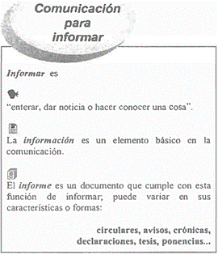
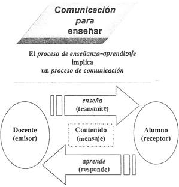
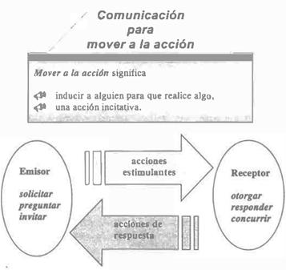
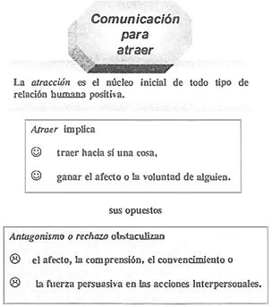
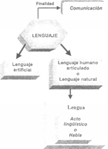
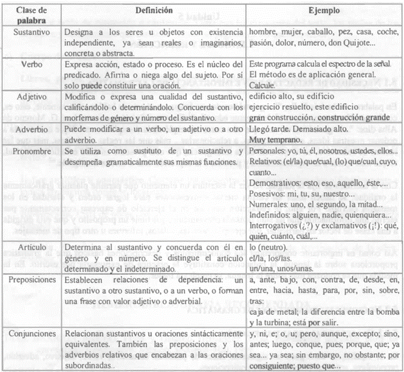
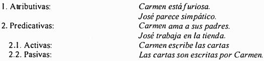
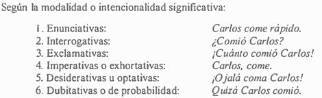
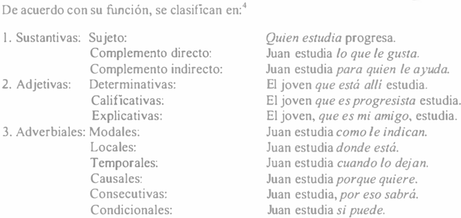
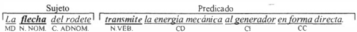

![IM]()
REDACCIÓN Y EXPOSICIÓN DE TEMAS DE INGENIERÍA (1124)
Objetivo(s) del curso:
El alumno mejorará su competencia en el uso de la lengua a través del desarrollo de capacidades de comunicación en forma oral y escrita. Valorará también la importancia de la expresión oral y de la redacción en la vida escolar y en la práctica profesional. Al final del curso, habrá ejercitado habilidades de estructuración y desarrollo de exposiciones orales y de redacción de textos sobre temas de ingeniería.
1. Comunicación y lenguaje.
1.1 Proceso de comunicación: características, componentes y funciones.
COMPONENTES
En la Redacción y Exposición, el proceso de comunicación se describe como el acto en el cual un emisor transmite un mensaje a un receptor o destinatario utilizando un canal y un medio, ambos compartiendo el mismo código. El mensaje contiene información con un propósito específico situado en entorno donde se desarrolla la comunicación (contexto).
Sin embargo, a veces puede presentarse interferencias o ruido durante el proceso, lo cual puede impedir que la comunicación se realice eficazmente.
La finalidad principal del lenguaje es la comunicación.
FUNCIONES
Hilda Basulto distingue las funciones del lenguaje como:
Informar
Transmitir datos o conocimiento.

Enseñar
Facilitar el aprendizaje o comprensión.

Un buen plan didáctico equivale a un buen plan de comunicación
Ø Conocer a los receptores y tratar de adaptarse a sus requerimientos.
Ø Promover su interés para recibir gustosamente la enseñanza.
Ø Adaptar el código comunicativo a las posibilidades receptivas de los alumnos.
Ø Graduar los temas, de los más fáciles a los más difíciles.
Ø Presentar los conocimientos abstractos o generales junto con ejemplos o aplicaciones.
Persuadir o Mover a la acción
Influir en las opiniones, actitudes o comportamientos.

Atraer o Expresar emociones
Captar la atención del receptor para lograr una interacción efectiva o comunicar sentimientos y estados de ánimo.

CARACTERÍSTICAS
· Interactividad: Permite un intercambio de información entre emisor y receptor.
· Dinámico: Puede adaptarse a diferentes contextos y situaciones.
· Bidireccionalidad: Existe la posibilidad de una respuesta del receptor.
· Sistemático: Involucra elementos definidos que trabajan en conjunto.
1.2 Lenguaje: definición, tipos y características.
DEFINICIÓN
El lenguaje se define como un sistema de símbolos y signos convencionales que son aceptados y usados individual y socialmente, con el fin de comunicar ideas, sentimientos y conocimientos. Se clasifica en:
- Lenguaje natural o articulado: Expresado en lenguas. La lengua es un sistema, convencional, social, económico y estructural. Representa la combinación arbitraria y convencional de signos que un grupo social o una comunidad ha adoptado para interactuar verbalmente El habla es la experiencia lingüística creativa e individual que cada hablante realiza de su lengua.
- Lenguaje artificial o formal: Creado con propósitos específicos s un sistema lingüístico construido por uno o más individuos, sobre la base de lenguas históricamente existentes, con validez y difusión universal, es decir, como posibles instrumentos de comprensión internacional, por encima de los idiomas nacionales. (e.g., lenguajes de programación).
- Lenguaje corporal: Uso de gestos y posturas para transmitir mensajes.
- Lenguaje visual: Comunicación mediante imágenes, gráficos o símbolos.
- Lenguaje artístico: Expresión de ideas y emociones a través de formas como la música, pintura o danza.
CARACTERÍSTICAS
- Arbitrariedad: Los signos utilizados no tienen una relación intrínseca con lo que representan.
- Convencionalidad: Es un sistema aceptado socialmente.
- Creatividad: Permite la generación de mensajes nuevos e innovadores.
- Sistematicidad: Está regido por reglas y estructuras gramaticales.
- Universalidad: Es una capacidad propia de todos los seres humanos.
1.3 Relación entre lenguaje, lengua y habla.

LENGUAJEEs la capacidad universal y propia del ser humano para comunicarse mediante sistemas de signos. Engloba tanto lenguas naturales como lenguajes artificiales y es una facultad inherente a todos los humanos.
LENGUA
Es el sistema convencional de signos lingüísticos adoptado por una comunidad para comunicarse. Representa la materialización del lenguaje, transmitida de generación en generación.
HABLA
Es el uso individual y creativo de la lengua y representa la manifestación concreta del lenguaje en situaciones específicas. Depende de factores como la intención del hablante y el contexto de la comunicación.
1.4 Diferencia entre lengua oral y lengua escrita.
La comunicación oral es la que de manera innata y social desarrollan los humanos, la cual se realiza mediante dos procesos o destrezas comunicativas: la expresión oral y la comprensión auditiva. Asimismo, esta clase de comunicación tiene expresiones no verbales que se presentan simultáneamente con las verbales: kinésicos (gestos y lenguaje corporal), paralingüísticos (rasgos de la voz como tono, altura, velocidad, pausas, titubeos) y proxémicos (la posición, espacio o distancia que intencionalmente establecen entre sí los comunicantes).
La comunicación escrita es la que se realiza cuando usamos un medio visual o gráfico. A diferencia del medio oral, en el visual la expresión escrita es más lenta y elaborada aunque duradera y transportable. Para poder comunicarnos por escrito, se requiere del aprendizaje y desarrollo de dos destrezas: la comprensión lectora y la expresión escrita.
Entre las características de la escritura están:
Ø Es estática y permanente, depende de un espacio o soporte físico.
Ø Como proceso de comunicación, el emisor está lejos del receptor, a quien por lo general no conoce, salvo en la interacción por correspondencia, y actualmente vía internet.
Ø Permite una lectura repetida y un análisis detallado de la información.
Ø Presenta elementos únicos como una organización cuidadosa de las unidades del discurso (oraciones y párrafos), expresiones lingüísticas más compactas o también elaboradas.
Ø Presenta elementos únicos como la organización espacial, la puntuación, la acentuación, las mayúsculas, signos para expresar admiración o interrogación, y otros efectos gráficos.
1.5 Estructura y función gramatical de palabras y oraciones.
En el español, se distinguen las siguientes clases de palabras: sustantivo, verbo, adjetivo, adverbio, pronombres, artículos, preposiciones y conjunciones.
Las interjecciones actualmente no se consideran una clase de palabra, sino una forma abreviada que reemplaza una oración o frase para expresar estados de ánimo o afectivos. Siempre se escriben entre signos de exclamación y son propias del lenguaje coloquial: ¡ay!, ¡fuego!, ¡basta!
La gramática es fundamental para redactar correctamente. En palabras de Andrés Bello, "La gramática de una lengua es el arte de hablar correctamente, esto es, conforme al buen uso, que es el de la gente educada”, Se analiza:
CLASES DE PALABRAS

ESTRUCTURA DE LAS ORACIONES
Oración simple
Tiene un verbo conjugado y es independiente. Según el tipo de predicado, se clasifican en:


Oración compuesta
Se presenta una relación de dependencia entre varias oraciones. Puede tener dos o más verbos. Se clasifica en coordinadas y subordinadas. Las oraciones coordinadas expresan la unión de dos o más elementos con el mismo valor sintáctico e independientes entre sí, y pueden estar relacionadas con un nexo o sin él.
Juan lee, Pedro escribe.
Anita camina y Oiga corre.
En las oraciones subordinadas, de una oración principal dependen una o más subordinadas:
El profesor desea que sus alumnos aprendan.
Si apruebo el examen, obtendré la beca.
ORACIONES COORDINADAS
Se distinguen dos tipos de coordinación: por yuxtaposición, las oraciones se unen sin elementos de enlace, y por nexos coordinantes, las oraciones se unen mediante una palabra o frase prepositiva que las relaciona.
1. Coordinación por yuxtaposición copulativa:
La no violencia es la ley de los hombres; la violencia es la ley de los animales. (Gandhi)
(Se sobrentiende y)
2. Coordinación por yuxtaposición adversativa:
No tenía este filósofo el tonel de Diógenes, sí una mísera casilla. (Azorín)
(Se sobrentiende aunque)
3. Coordinación por yuxtaposición causal:
Apúrate, no queda tiempo. (Miró)
(Se sobrentiende porque)
4. Coordinación copulativa: Relación de suma o adición. Nexos coordinantes: y (e, ante i), ni.
Los soldados desfilan y la gente aplaude.
La policía interroga al testigo e investiga las pruebas.
No quiere estudiar ni trabajar.
5. Coordinación adversativa: Relación de contrariedad parcial o total entre dos enunciados.
a) Adversativa restrictiva: contrariedad entre enunciados, pero sin ser incompatibles:
María quiere intentarlo. pero no se atreve. (valor restrictivo)
María quiere intentarlo. mas (empero) no se atreve. (arcaísmos)
Estos jóvenes son listos, aunque no lo parecen. (valor concesivo y también adversativo)
b) Adversativa exclusiva: enunciados incompatibles:
No corre. sino vuela; No corre, sino que vuela;
No corre, que vuela; No lo dije yo. sino tú.
Frases conjuntivas y adverbios lexicalizados con valor restrictivo o exclusivo: sin embargo, no obstante, con todo, excepto, salvo, menos, antes bien, etc.
6. Coordinación disyuntiva: Relación de alternancia exclusiva de enunciados. Nexos: o (u, ante o).
Estudia o consigue un trabajo.
Hazlo voluntariamente u (hazlo) obligado por las circunstancias.
Esto es la guerra o (esto es) la destrucción. (valor de equivalencia)
Come o (y) bebe lo que quieras. (valor copulativo)
7. Coordinación distributiva: Relación de alternancia de los enunciados.
a) Con marca léxica: repetida al principio de cada oración marca el valor distributivo: ya ... ya, ora ... ora, sea ... sea, bien ... bien, ni ... ni (negación):
Ya estudia, ya trabaja.
Ni estudia, ni trabaja.
b) En forma yuxtapuesta: la coordinación entre enunciados se establece con palabras correlativas (pronombres y adverbios) puestas al principio de cada oración:
Unos nacen. otros mueren.
Allí se trabaja, aquí se descansa
ORACIONES SUBORDINADAS

FUNCIÓN DE ELEMENTOS GRAMATICALES
La oración está compuesta por sujeto y predicado. El sujeto es aquello de lo que se habla y el predicado es Jo que se dice del sujeto.
El sujeto tiene como núcleo nominal (N. NOM.), por lo general, a un sustantivo u otra clase de palabra sustantivada, como ya se ejemplificó anteriormente, un adjetivo, un pronombre, etc. A su vez, el núcleo nominal puede tener distintos modificadores (MD), como artículos, adjetivos, complemento adnominal, aposición.
El núcleo verbal del predicado será un verbo. En el predicado se pueden encontrar distintos tipos de complementos que caracterizan la acción o estado descritos por el verbo, entre ellos, los complementos directo, indirecto y circunstancial.
El complemento directo (CD) expresa lo que se dice del sujeto a través del verbo, o lo que recibe directamente la acción del verbo. El complemento indirecto (CJ) indica la persona o cosa personificada que recibe el beneficio, provecho, daño o perjuicio de la acción del verbo. El complemento circunstancial (CC) describe en qué circunstancias (tiempo, modo, lugar, compañía, cantidad) se realiza la acción verbal.

1.6 Ejercicios de comunicación lingüística.
Análisis de casos prácticos:
- Identificar los elementos de comunicación (emisor, receptor, mensaje, canal, código, contexto).
- Detectar posibles interferencias o ruido en el proceso comunicativo.
Redacción de mensajes:
- Crear textos cortos con propósito claro: informar, persuadir o atraer.
- Uso de conectores para garantizar coherencia y cohesión en el mensaje.
Prácticas de lenguaje oral:
- Ejercicios de pronunciación y articulación para mejorar la claridad del habla.
- Dinámicas grupales para desarrollar fluidez en la interacción verbal.
Interpretación de textos:
- Lectura comprensiva para identificar ideas principales y secundarias.
- Resumir el contenido del texto con vocabulario adecuado.
Construcción de diálogos:
- Creación de situaciones simuladas para practicar habilidades de interacción verbal.
- Uso correcto del registro y tono según el contexto y el interlocutor.
Resolución de problemas comunicativos:
- Plantear situaciones donde el mensaje no se entiende claramente.
- Proponer ajustes al mensaje para garantizar su efectividad.
2. Estructura del texto escrito.
2.1 Texto: estructura y propiedades (adecuación, coherencia y cohesión). Marcadores discursivos.
Un texto debe poseer las siguientes propiedades:
- Adecuación: Adaptarse al propósito comunicativo y al receptor.
- Coherencia: Presentar ideas relacionadas lógica y temáticamente.
- Cohesión: Relación gramatical y léxica entre las partes del texto, utilizando conectores o nexos como pronombres, adverbios y conjunciones.
Los marcadores discursivos funcionan como herramientas para enlazar y organizar ideas, por ejemplo:
- Causa: porque, puesto que.
- Oposición: pero, aunque.
- Secuencia: primero, después, finalmente
2.2 Párrafo: características y clasificación.
El párrafo es una unidad textual compuesta por oraciones interrelacionadas. Características principales:
- Coherencia: Las oraciones dependen unas de otras para su interpretación.
- Cohesión: Utilización de nexos y repetición para conectar ideas.
Clasificación de párrafos:
- Enumeración: Lista de propiedades de un objeto o tema.
- Secuencia: Describe pasos o eventos en orden cronológico.
- Comparación/contraste: Identifica similitudes y diferencias.
- Desarrollo de concepto: Expone una idea principal y la apoya con ejemplos.
- Causa-efecto: Presenta un evento seguido por sus causas o consecuencias.
2.3 Tipos de textos descriptivos-argumentativos: informe técnico, artículo científico, ensayo y tesis.
Informe técnico:
- Documento formal que presenta datos objetivos sobre un tema específico.
Artículo científico:
- Texto académico que comunica resultados de investigaciones.
Ensayo:
- Texto subjetivo que expone reflexiones personales sobre un tema.
Tesis:
- Documento extenso y estructurado que defiende una hipótesis con base en una investigación profunda
2.4 Ejercicios de análisis de estructura de textos.
incluyen:
- Identificar la jerarquía de ideas principales y secundarias.
- Clasificar tipos de párrafos según sus funciones.
- Reconocer conectores y marcadores discursivos utilizados en un texto.
3. La redacción.
3.1 Características de una buena redacción: claridad, precisión, estilo.
Claridad: Las ideas deben expresarse de forma comprensible para el lector.
Precisión: Uso de vocabulario adecuado, evitando ambigüedades.
Estilo: Es el toque personal del autor, pero debe ser funcional, claro y atractivo para el lector
3.2 Operaciones básicas para la configuración de textos: descripción, narración, exposición y argumentación.
Descripción: Representación detallada de personas, objetos o situaciones.
Narración: Relato de hechos reales o ficticios en un orden lógico o cronológico.
Exposición: Explicación de un tema de manera objetiva, con estructura clara y lógica.
Argumentación: Defensa de una opinión o tesis mediante razonamientos o pruebas
3.3 Errores y deficiencias comunes en la redacción.
· Uso incorrecto de vocabulario (barbarismos, solecismos, cacofonías).
· Construcciones gramaticales deficientes, como falta de concordancia.
· Ambigüedades o anfibologías que dificultan la comprensión
3.4 Reglas básicas de ortografía. Ortografía técnica, especializada y tipográfica.
· Ortografía técnica: Uso correcto de términos técnicos y científicos.
· Ortografía especializada: Normas específicas para ciertas disciplinas.
· Ortografía tipográfica:
o Uso adecuado de mayúsculas, minúsculas y puntuación.
o Respeto por normas internacionales en símbolos y unidades
3.5 Ejercicios prácticos de redacción.
Identificación de errores comunes en textos.
Creación de diferentes tipos de escritos: narrativos, descriptivos, argumentativos.
Corrección y mejora de textos previos para cumplir con los criterios de claridad y precisión.
4. La exposición oral.
4.1 Preparación del tema.
· Investigar y recopilar información confiable.
· Definir objetivos claros de la exposición.
· Estructurar el contenido de manera lógica: introducción, desarrollo y conclusión.
· Adaptar el contenido al público objetivo y al tiempo disponible
4.2 Esquemas conceptuales y estructuras expositivas.
Usa esquemas conceptuales como mapas mentales, diagramas y cuadros sinópticos para organizar ideas principales y secundarias.
Estructura el contenido con un inicio atractivo, puntos clave bien desarrollados y un cierre contundente que resuma las ideas principales
4.3 Técnicas expositivas.
· Vocalización clara: Pronunciación adecuada y tono variado.
· Lenguaje corporal: Uso de gestos naturales, postura firme y contacto visual.
· Control del ritmo: Evitar pausas largas o hablar demasiado rápido.
· Interacción: Involucrar al público con preguntas o ejemplos.
4.4 Problemas comunes de expresión oral (articulación deficiente, muletillas, repeticiones, repertorio léxico).
Articulación deficiente: Pronunciación incorrecta o falta de claridad.
Muletillas: Uso excesivo de palabras como “este”, “o sea”.
Repeticiones: Redundancia innecesaria que distrae al público.
Repertorio léxico limitado: Escasa variedad en el uso de vocabulario
4.5 Material de apoyo.
· Visuales: Presentaciones en diapositivas, gráficos, imágenes.
· Audiovisuales: Videos o grabaciones para complementar puntos clave.
· Manuales: Folletos o documentos para reforzar los conceptos.
· Demostraciones: Uso de ejemplos prácticos o modelos
4.6 Ejercicios prácticos de exposición oral.
Simulaciones de exposiciones frente a compañeros o mentores.
Ejercicios para mejorar el control del tono y ritmo.
Práctica de improvisación para responder preguntas o resolver problemas inesperados
5. Ejercicios de redacción de escritos técnicos sobre ingeniería.
5.1 Planeación del escrito.
La planeación de un texto técnico implica:
· Definición del objetivo: Clarificar la intención del escrito, respondiendo a ¿para qué? y ¿para quién?
· Delimitación del tema: Decidir sobre qué se escribirá.
· Selección y jerarquización: Identificar el contenido esencial y organizarlo según su importancia.
5.2 Acopio y organización de la información.
Fuentes confiables: Reunir datos de libros, artículos, entrevistas, y bases científicas.
Fichas de trabajo: Método para registrar información importante, ya sea textual, resumida o parafraseada, facilitando su consulta posterior.
5.3 Generación y jerarquización de ideas y argumentos. Mapas conceptuales.
Ideas principales y secundarias: Ordenar de lo más general a lo más específico.
Mapas conceptuales: Técnica para representar gráficamente la relación entre ideas, facilitando la comprensión y planificación.
5.4 Estructuración y producción del texto.
La estructura del texto debe incluir:
- Introducción: Presentar el tema y objetivos.
- Desarrollo: Exposición lógica y detallada de las ideas.
- Conclusión: Síntesis de lo discutido y resultados.
5.5 Aparato crítico: citas, sistemas de referencia y bibliografía.
Citas: Pueden ser textuales (entre comillas) o parafraseadas, siempre con referencias.
Bibliografía: Listar las fuentes consultadas en formato ordenado (alfabético por autor o título).
Sistemas de referencia: Usar normas específicas según el ámbito académico (e.g., APA, MLA).
5.6 Revisión y corrección del escrito.
Contenido: Revisar la coherencia, precisión y claridad de ideas.
Forma: Verificar gramática, ortografía, y estilo técnico.
Formato: Asegurar que cumpla con las normas requeridas para publicación
5.7 Versión final del trabajo escrito.
integración final: Incluir correcciones basadas en revisiones previas.
Presentación adecuada: Asegurar una estructura limpia, con uso correcto de elementos gráficos y tablas si son necesarios.
6. Ejercicios de exposición oral de temas de ingeniería.
6.1 Planeación de la exposición.
Definición del propósito: Establecer el objetivo principal de la exposición y su alcance.
Identificación del público: Conocer las características del público para adaptar el discurso.
Delimitación del tema: Seleccionar un tema específico, relevante y con un enfoque claro.
6.2 Acopio y organización de la información.
Fuentes confiables: Utilizar referencias académicas, datos técnicos, e investigaciones recientes.
Métodos de acopio: Crear fichas de trabajo o resúmenes para organizar los datos obtenidos.
Clasificación de la información: Agruparla en categorías según relevancia y conexión temática.
6.3 Generación y jerarquización de ideas y argumentos. Mapas conceptuales.
Jerarquización: Ordenar las ideas principales y secundarias de manera lógica.
Uso de mapas conceptuales: Representar visualmente las relaciones entre conceptos para facilitar la comprensión y planificación de la exposición
6.4 Estructuración del discurso.
El discurso debe estar dividido en:
- Introducción:
- Captar la atención.
- Presentar el tema y su importancia.
- Desarrollo:
- Exponer ideas principales y sus detalles técnicos.
- Usar ejemplos y analogías.
- Conclusión:
- Resumir los puntos clave.
- Reafirmar el propósito y abrir espacio para preguntas.
6.5 Utilización de apoyos visuales y otros recursos.
Apoyos visuales: Diapositivas, gráficos, tablas, diagramas.
Recursos adicionales:
- Videos demostrativos.
- Modelos físicos o prototipos
6.6 Presentación pública del tema.
Ensayo previo: Practicar frente a compañeros o en un ambiente similar al real.
Técnicas de expresión:
- Lenguaje corporal adecuado.
- Vocalización clara y control del ritmo.
Gestión del tiempo: Asegurar que cada parte del discurso se ajuste al tiempo estipulado
7. Bibliografía.
CUAIRÁN RUIDIAZ, María, FIEL RIVERA, Amelia Guadalupe - Elaboración de textos didácticos de ingeniería.